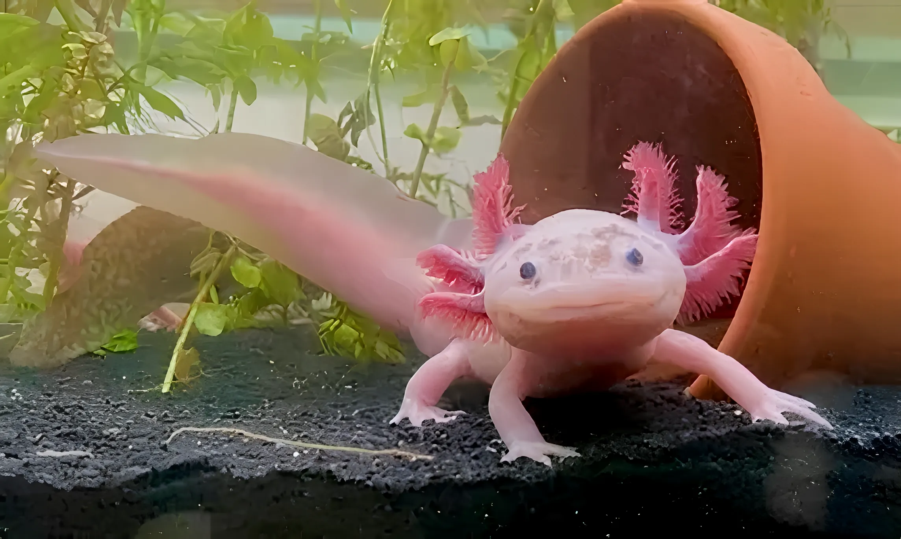

Proyectos Locales 2025
Financiamiento Directo
EcoGuía SOS
Junio 2025
Buscamos proyectos de reforestación y gestión de agua en comunidades vulnerables.
Participa en nuestras iniciativas y proyectos especiales para el cambio ambiental.
Encuentra las convocatorias vigentes para proyectos, concursos y programas de apoyo ambiental.

Buscamos proyectos de reforestación y gestión de agua en comunidades vulnerables.

Únete a las brigadas de limpieza y monitoreo de canales en la zona chinampera.